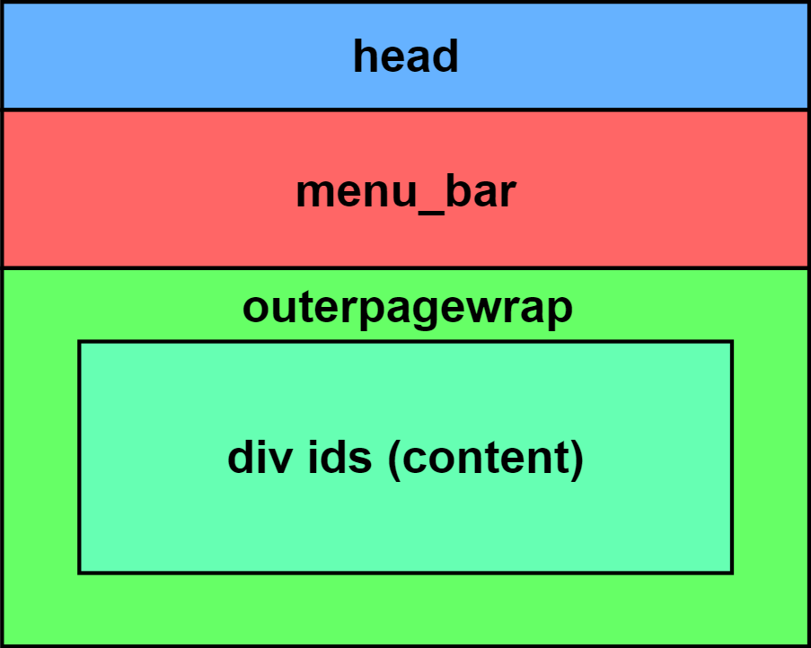
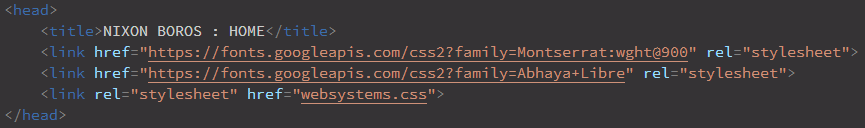
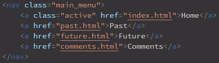
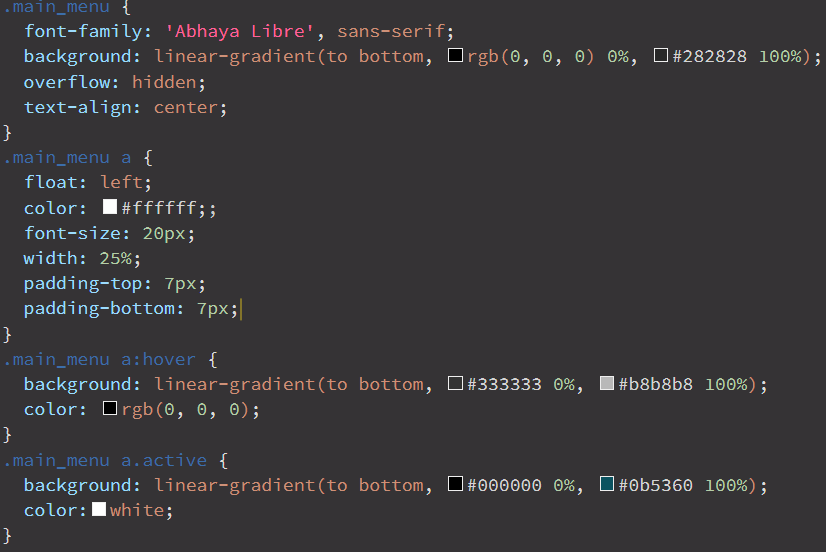
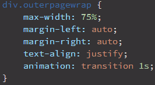
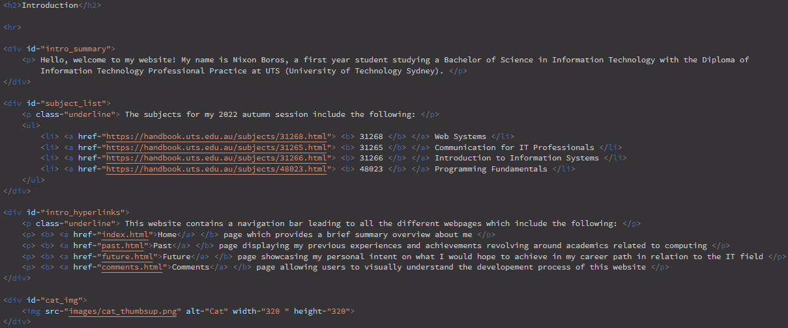
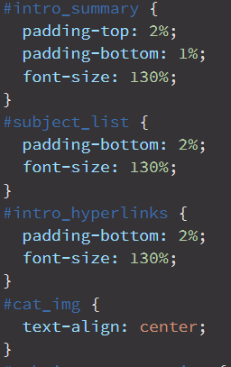
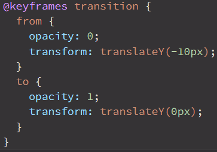

The website consists of four html documents (index.html, past.html, future.html, comments.html) and one cascasing style sheet (websystems.css) specified. The structure of the website is as illustrated below, showcasing 4 div containers which are consistent throughout all four html documents.

The head includes the name of the webpage, two fonts and a link to the CSS (cascading style sheet). For example, heres a head from index.html:

The menu_bar is the navigation bar inluding the hyperlinks towards the other pages allowing for an easier experience navigating around the website. For example, a menu_bar from index.html and its CSS (cascading style sheet) effects is shown below. The (.main_menu) and (.main_menu a) deals with the navigation bars appearance changing things such as font, font size, colours, alignment, etc. Additionally, I aimed to create a more responsive feeling when using the navigation bar so I incorporated the (.main_menu a:hover) which controls the bar and text colour when hovered by the user. Moreover, I wanted to make sure that users would visually see the current page they are viewing so I added (.main_menu a:active) which changes the bar and text colour. I applied the active class on the corresponding bar according to what page is being viewed.


The outerpagewrap is used to create the layout of the text where it is more narrow and centered allowing for the content within to be contained inside a smaller width of the screen reducing eye strain for users. This is applied within the CSS (cascading style sheet) shown below:

The div ids contain the content of the website where all the information is located. The div ids are seperated into different paragraphs with several different effects applied on them. For example, the index.html includes the div ids below which have effects such as padding for create spacing, font size and aligning:


Pros and Cons
Pros
Cons
Lack of intricate design elements allow for the site to function on several devices
Can create a generic looking site, not allowing the website to stand out
Allows the user to quickly go through content through the navigation bar
Lack of design has the possibility to bore users
Allows for quick load times, as there is a lack of intricate designs
Limited design options regarding color, shapes and icon designs
Eliminates unnecessary elements to create a more simplistic design
Dark background can cause reading to be difficult in well lit areas
Aesthetics
Whilst developing my website, I aimed to create a minimalistic and ergonomic experience. A consistent design was implemented within my website to ensure that navigating for users is straight forward. Consistency is seen within each page where I use the same colour scheme (black/white/cyan) and layout of each page where all the text is centered and more narrow to provide a better reading experience. Additionally, this ensures that users are not required to learn a new design for each page further approaching towards a more ergonomic design solution.
Layout and formatting are important in setting a minimalistic design to assist with the ease of navigation. The layout of the navigation bar at the top of the website acts as a seperator between the title of the page and the text giving users an easier time navigating as they are able to easily see which page they are currently on to find the informational text. Additionally, formatting of font sizes and colours are also important as they impact the users salience. I incorporated this knowledge by making sure that the title page is largest so the user knows what page they are viewing and headings/sub-headings are a different colour or larger in size in comparison to the text providing the information so that users are provided with an easier time looking for information and do not have to
Additionally, I wanted to create a smooth viewing experience so I created a clean transition when switching between the pages. The effects control the opacity and position of all the text block within the outerpagewrap div. The CSS (cascading style sheet) that I applied when switching between pages is shown beblow:

Accessibility
The colours of my website were strategically selected to enhance the reading experience and also acknowledging colour blind individuals. In the website, I utilized contrasting colours of black and white between the background and text to ensure that the text is easily distiguishable from the background, providing for an easier reading experience. Additionally, I incorporated the use of in text styling to highlight the main points within a paragraph to enable colourblind individuals to gain important information without scanning through the entire paragraph. Allowing the website to be viewed and easily used by everyone including individuals with visual impairments.
The most common form of color deficiency is red-green color deficiency, which is why I had shifted away from red and green colours to be able to minimize the amount of individuals who are unable to view the website, enabling a more accessible website to individuals with low vision or varying levels of colour blindness.
Ensuring that the website reduces the number of clicks is detrimental to providing an easy experience for a user. With the navigation bar on every page this allows users to be able to reduce their number of clicks to find whatever information they want to view. By incorporating this simple element, it is able to reduce potential cases of RSI (Repetitive Strain Injury) whilst navigating the website.
Structure
The website consists of four html documents (index.html, past.html, future.html, comments.html) and one cascasing style sheet (websystems.css) specified. The structure of the website is as illustrated below, showcasing 4 div containers which are consistent throughout all four html documents.
The head includes the name of the webpage, two fonts and a link to the CSS (cascading style sheet). For example, heres a head from index.html:
The menu_bar is the navigation bar inluding the hyperlinks towards the other pages allowing for an easier experience navigating around the website. For example, a menu_bar from index.html and its CSS (cascading style sheet) effects is shown below. The (.main_menu) and (.main_menu a) deals with the navigation bars appearance changing things such as font, font size, colours, alignment, etc. Additionally, I aimed to create a more responsive feeling when using the navigation bar so I incorporated the (.main_menu a:hover) which controls the bar and text colour when hovered by the user. Moreover, I wanted to make sure that users would visually see the current page they are viewing so I added (.main_menu a:active) which changes the bar and text colour. I applied the active class on the corresponding bar according to what page is being viewed.
The outerpagewrap is used to create the layout of the text where it is more narrow and centered allowing for the content within to be contained inside a smaller width of the screen reducing eye strain for users. This is applied within the CSS (cascading style sheet) shown below:
The div ids contain the content of the website where all the information is located. The div ids are seperated into different paragraphs with several different effects applied on them. For example, the index.html includes the div ids below which have effects such as padding for create spacing, font size and aligning:
Pros and Cons
Aesthetics
Whilst developing my website, I aimed to create a minimalistic and ergonomic experience. A consistent design was implemented within my website to ensure that navigating for users is straight forward. Consistency is seen within each page where I use the same colour scheme (black/white/cyan) and layout of each page where all the text is centered and more narrow to provide a better reading experience. Additionally, this ensures that users are not required to learn a new design for each page further approaching towards a more ergonomic design solution.
Layout and formatting are important in setting a minimalistic design to assist with the ease of navigation. The layout of the navigation bar at the top of the website acts as a seperator between the title of the page and the text giving users an easier time navigating as they are able to easily see which page they are currently on to find the informational text. Additionally, formatting of font sizes and colours are also important as they impact the users salience. I incorporated this knowledge by making sure that the title page is largest so the user knows what page they are viewing and headings/sub-headings are a different colour or larger in size in comparison to the text providing the information so that users are provided with an easier time looking for information and do not have to
Additionally, I wanted to create a smooth viewing experience so I created a clean transition when switching between the pages. The effects control the opacity and position of all the text block within the outerpagewrap div. The CSS (cascading style sheet) that I applied when switching between pages is shown beblow:
Accessibility
The colours of my website were strategically selected to enhance the reading experience and also acknowledging colour blind individuals. In the website, I utilized contrasting colours of black and white between the background and text to ensure that the text is easily distiguishable from the background, providing for an easier reading experience. Additionally, I incorporated the use of in text styling to highlight the main points within a paragraph to enable colourblind individuals to gain important information without scanning through the entire paragraph. Allowing the website to be viewed and easily used by everyone including individuals with visual impairments.
The most common form of color deficiency is red-green color deficiency, which is why I had shifted away from red and green colours to be able to minimize the amount of individuals who are unable to view the website, enabling a more accessible website to individuals with low vision or varying levels of colour blindness.
Ensuring that the website reduces the number of clicks is detrimental to providing an easy experience for a user. With the navigation bar on every page this allows users to be able to reduce their number of clicks to find whatever information they want to view. By incorporating this simple element, it is able to reduce potential cases of RSI (Repetitive Strain Injury) whilst navigating the website.